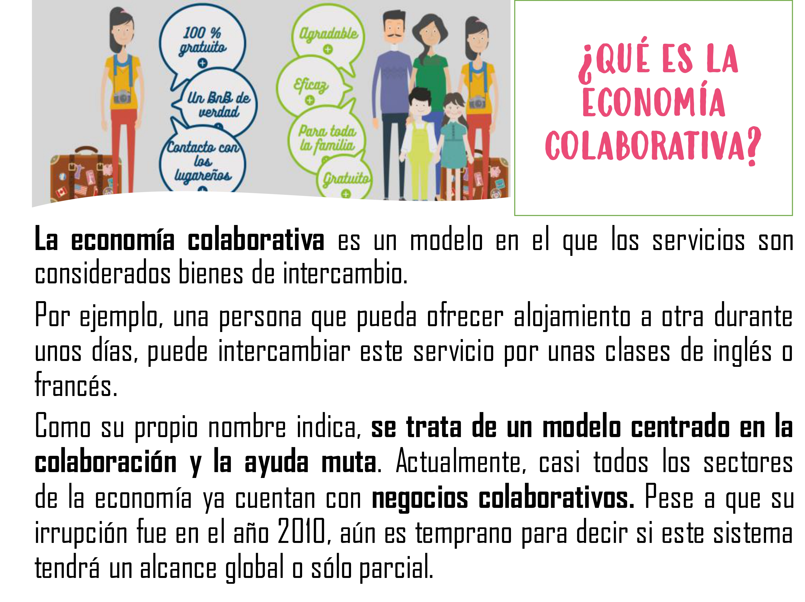

Flipped learning
Y aquí tenéis el segundo vídeo para ver en casa, que como ya sabéis trabajaremos en clase:
Y aquí tenéis el segundo vídeo para ver en casa, que como ya sabéis trabajaremos en clase:
Compartir comida casera

Se trata de conseguir tener acceso a algo que en vez de conseguir ese algo. De esta forma, pagas por usar un bien, pero no lo compras.
Ejemplos de ello serían Netflix o Spotify, plataformas que te permiten visionar series y películas o escuchar música, sin necesidad de adquirir un DVD o un CD.
Obra publicada con Licencia Creative Commons Reconocimiento Compartir igual 4.0